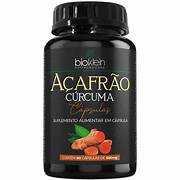
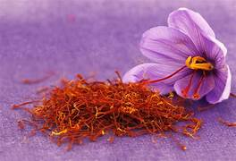

AÇAFRÂO
Uma das principais especiarias
O açafrão, também conhecido como "ouro vermelho", é uma especiaria altamente valorizada obtida a partir dos estigmas (parte feminina da flor) da planta Crocus sativus. Ele é conhecido pelo seu sabor único, aroma intenso e cor vibrante, sendo amplamente utilizado na culinária, medicina tradicional e até mesmo na indústria cosmética.
O açafrão é mais conhecido por sua utilização na culinária, onde é usado para dar sabor, aroma e cor aos pratos. Ele é especialmente comum em pratos de arroz, risotos, sopas, molhos e sobremesas. O açafrão também é um ingrediente essencial em várias cozinhas tradicionais ao redor do mundo, como a indiana, persa, espanhola e italiana.

Clique para comprar
